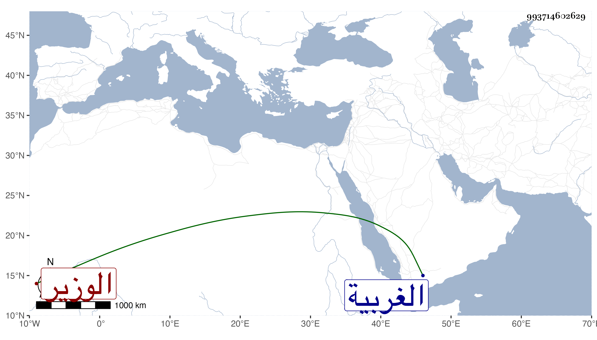

0902Sakhawi.DawLamic.ITO20230111-ara1.EIS1600.993714602629
Biography ID: 993714602629
ابن البقري نسبة لدار البقر من الغربية التاج عبد الله بن سعد الدين نصر الله الوزير ابن الوزير والشرف عبد الباسط والمجد اسمعيل ابنا علم الدين يحيى وابن عمهما العلم يحيى بن التاج عبد الرزاق وهو أكبر منهما وله ثلاثة اخوة حمزة وفرج وأبو سعيد ولعبد الباسط من الولد ولحمزة شمس الدين محمد أحد كتاب الاسطبل تلقاه عن أبيه أما المجد شاكر بن غبريل صاحب المدرسة بالقرب من جامع الحاكم فمن القرن الثامن مات في شوال سنة خمس وسبعين وسبعمائة كما أن نصر الله المشار إليه منه أيضا مات في سنة تسع وتسعين وسبعمائة خنقا فيما قيل .
